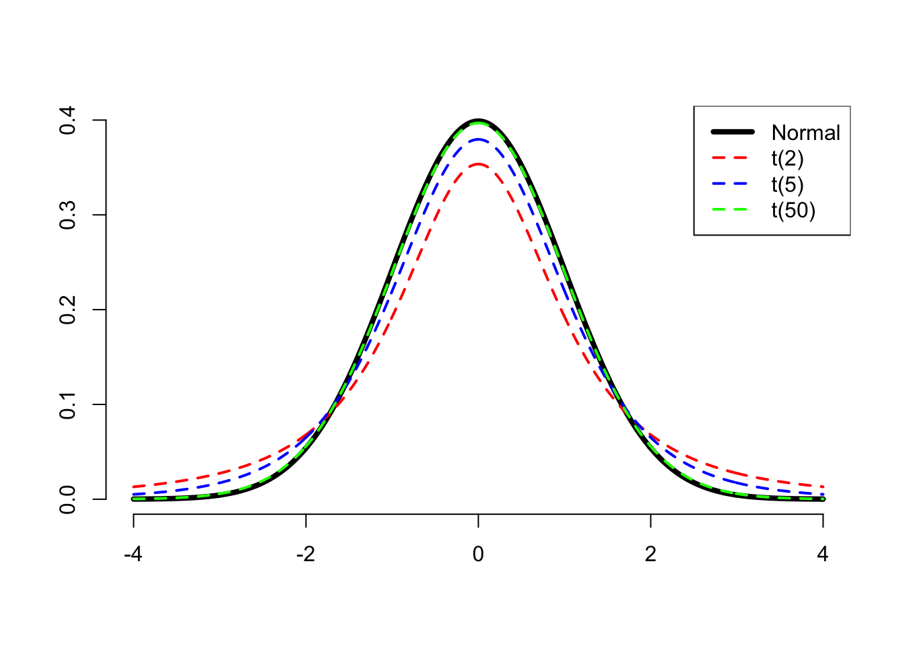

Confidence Intervals
LEARNING OBJECTIVES
- Understand the importance of a confidence interval.
- Understand the link between standard errors and confidence intervals.
- Understand how to construct a confidence interval for an unknown parameter of interest.
Introduction
Without loss of generality, we will consider the sample mean as the statistic of interest and we will consider two scenarios:
- Entire population data available (unlikely);
- Entire population data are NOT available (more common).
For both scenarios, we will investigate the following question:
What was the average yearly salary of a National Football League (NFL) player in 2019?
This question is about the mean salary of all NFL players in 2019, which is denoted \(\mu\) and is a population parameter.
A. Population data available (unlikely)
If we have data on the entire population of NFL players and we are interested in a parameter such as the population mean salary, we can simply compute the mean on the available population data. There would be no uncertainty and nothing to estimate: we have the entire population data, so we can easily compute the mean salary, and we would know what the actual parameter value is.
In this scenario, we would have a file containing the yearly salaries (in millions of dollars) for all players being paid in 2019 by a National Football League (NFL) team. This entire dataset represents the entire population of all National Football League players in that year.
The data on the entire population:
library(tidyverse)
nfl_pop <- read_csv("https://uoepsy.github.io/data/NFLContracts2019.csv")
head(nfl_pop)## # A tibble: 6 × 5
## Player Position Team TotalMoney YearlySalary
## <chr> <chr> <chr> <dbl> <dbl>
## 1 Russell Wilson QB Seahawks 140 35
## 2 Ben Roethlisberger QB Steelers 68 34
## 3 Aaron Rodgers QB Packers 134 33.5
## 4 Jared Goff QB Rams 134 33.5
## 5 Carson Wentz QB Eagles 128 32
## 6 Matt Ryan QB Falcons 150 30The population mean salary:
mu <- mean(nfl_pop$YearlySalary)
mu## [1] 3.033404Say we wanted to check whether 1 million was a plausible average yearly salary for a NFL player in 2019. The answer is no, it isn’t. We know the actual average salary which is 3.03 million of dollars, and this is different from 1 million.
NA. Population data NOT available (more common)
Now suppose we didn’t know anything from the previous section.
In most research, the data for the entire population is not available as we cannot afford to collect data on the entire population. As a consequence, we cannot compute the population parameter \(\mu\), which is unknown, and we must rely on random sampling to estimate it. It is good practice to use a sample size as large as we can afford in order to obtain good precision.
Let’s pretend for now that we don’t have the entire NFL population data, and are only able to collect data for 50 players. Fortunately someone else did it for us: they chose 50 players at random and interviewed them to find out their salary. The sample data are:
nfl_sample <- read_csv("https://uoepsy.github.io/data/NFLSample2019.csv")
nfl_sample## # A tibble: 50 × 5
## Player Position Team TotalMoney YearlySalary
## <chr> <chr> <chr> <dbl> <dbl>
## 1 Najee Goode 43OLB Jaguars 0.805 0.805
## 2 Jack Crawford 43DT Falcons 9.9 2.48
## 3 Tra Carson RB Lions 1.23 0.615
## 4 Jordan Richards S Ravens 0.805 0.805
## 5 Desmond Trufant CB Falcons 68.8 13.8
## 6 Alex Anzalone 43OLB Saints 3.47 0.866
## 7 Trey Burton TE Bears 32 8
## 8 Josh Martin 43DE Saints 0.805 0.805
## 9 Lavonte David ILB Buccaneers 50.2 10.0
## 10 Maliek Collins 43DT Cowboys 3.55 0.888
## # … with 40 more rowsWe estimate the unknown population mean salary (what we are interested in) with the sample mean salary \(\bar x\), which we can compute from the obtained sample. The sample mean salary represents our “best guess” of the population mean salary.
xbar <- mean(nfl_sample$YearlySalary)
xbar## [1] 3.35882The average salary in the sample of 50 NFL players is 3.36 million dollars.
Without knowledge of the full data, we would say that we estimate the average salary of an NFL player in the year 2019 to be 3.36 million dollars.
However, we know that if we had collected a different sample, the sample mean would be a different number from 3.36 as it varies from sample to sample.
We do not want to report a single number as the estimate, as we know that our estimate will almost certainly differ from the true value of the population parameter. We probably want to be cautious and report a range of plausible values for the parameter, known as confidence interval (CI), which is more likely to capture the true value of the parameter. See the following image for a summary of the idea:

Figure 1: Source: moderndive.com
To get the range of plausible values, we will use the fact that in a Normal distribution 95% of the values are roughly between the mean - 2 SD and the mean + 2 SD. See here for more details.
We know that the sample mean follows a normal distribution, and we also know that the standard deviation of the sampling distribution of the mean is also known as the standard error (SE).
However, we cannot obtain the standard error of the mean as we do not have the data on the entire population. If we used the formula for the standard error, we would need to know the population standard deviation \(\sigma\) (which we don’t):
\[ SE = \frac{\sigma}{\sqrt{n}} \quad \text{where} \quad \sigma = \text{pop. standard deviation} \]
This week we will learn how to estimate the standard error of a statistic when we only have one sample.
Confidence intervals
This section investigates how to obtain the standard error and construct a confidence interval when only one sample is available.
Let \(\mu\) be the population mean and \(\sigma\) the population standard deviation. In Week 11 of semester 1 you saw that
- the sample mean \(\bar X\) follows a normal distribution;
- its average \(\mu_{\overline X}\) is equal to the unknown population mean \(\mu\);
- its standard deviation is equal to \(\sigma_{\overline X} = SE = \sigma / \sqrt{n}\), also known as the standard error of the mean.
\[ \bar X \sim N(\mu_{\overline{X}}, \sigma_{\overline{X}}) \quad \text{where} \quad \begin{cases} \mu_{\overline{X}} = \mu \\ \sigma_{\overline{X}} = SE = \frac{\sigma}{\sqrt{n}} \end{cases} \]
Property 1 tells us that if we computed the sample mean on many samples from the population and created a histogram, this would be bell-shaped like a Normal distribution. So, the sampling distribution of the mean is a Normal distribution.
Property 2 tells us that the sampling distribution of the mean is centred at the unknown population mean \(\mu\). So, on average our sample means are close to the true but unknown population mean.
Property 3 tells us that the spread (standard deviation) of the sampling distribution is \(\sigma_{\overline X} = \sigma / \sqrt{n}\). The larger the sample size, the smaller the standard error, and the more precise the estimate is.
Finding the central 95% probability
Recall this image for a generic \(X \sim N(\mu, \sigma)\) distribution:

The middle 95% probability lies between the values \(x = \mu - 2 \sigma\) and \(x = \mu + 2 \sigma\).
To be more precise, the values between which lies the central 95% probability are those quantiles cutting 0.025 probability to the left and 0.025 probability to the right (= 0.975 to the left).
qnorm(c(0.025, 0.975)) # note that: 0.975 - 0.025 = 0.95## [1] -1.959964 1.959964Meaning that 95% of the values in a normal distribution are between
\[ [\mu - 1.96 \cdot \sigma, \ \mu + 1.96 \cdot \sigma] \]
If we replace \(\mu\) and \(\sigma\) with \(\mu_{\overline X}\) and \(\sigma_{\overline X}\) in the interval above, we obtain the corresponding 95% confidence interval for the sample mean \(\bar X \sim N(\mu_{\overline X}, \sigma_{\overline X})\).
That is, roughly 95% of the values are between
\[ [\mu_{\overline X} - 1.96 \cdot \sigma_{\overline X},\ \mu_{\overline X} + 1.96 \cdot \sigma_{\overline X}] \]
Substituting the formula for the \(SE = \sigma_{\overline X} = \sigma / \sqrt{n}\), we know that 95% of the values are roughly between:
\[ \left[ \mu - 1.96 \cdot \frac{\sigma}{\sqrt n},\ \mu + 1.96 \cdot \frac{\sigma}{\sqrt n} \right] \]
The formula above is the 95% confidence interval for the population mean.
There is one problem though… The confidence interval depends on \(\mu\) and \(\sigma\), the population mean salary and population standard deviation.
When we don’t have the entire population data and we can only afford ONE sample, we do not have \(\mu\) and we also do not have \(\sigma\). We estimated \(\mu\) with the sample mean \(\bar x\), and we must also estimate \(\sigma\) with the sample standard deviation \(s\).
The standard error becomes:
\[ SE = \frac{s}{\sqrt n} \qquad \text{where } s = \text{sample standard deviation} \]
and the confidence interval for the population mean becomes:
\[ \left[ \bar x - 1.96 \cdot \frac{s}{\sqrt n},\ \bar x + 1.96 \cdot \frac{s}{\sqrt n} \right] \]
However, that formula is not quite right! We estimated the unknown \(\sigma\) with the sample standard deviation \(s\). This brings an extra element of uncertainty.
Because we are unsure about the actual value of the population standard deviation, the resulting distribution is no longer Normal, but a distribution that is more “uncertain” and places higher probability in the tails of the distribution, meaning that we have a wider range of values that we can observe (hence higher uncertainty).
When the population standard deviation is unknown, the sample mean follows a t-distribution.
The t-distribution depends on a number called the degrees of freedom (DF) of the distribution, which is related to the sample size. The degrees of freedom is equal to the sample size - 1: \[ df = n - 1 \] Because of this, we refer to the distribution of the sample mean as the \(t(n-1)\) distribution, and we write the degrees of freedom within parentheses.
t-distributions with smaller degrees of freedom (corresponding to smaller samples) put more probability on the tails of the distribution, meaning more uncertainty. As the degree of freedom increases, the t-distribution is indistinguishable from the Normal distribution, and this happens approximately with df \(\geq\) 30.

Because the distribution has changed, we need to find the new values in between which lies 95% of the probability. These are no longer -1.96 and 1.96 and will vary with the distribution.
Consider a sample of size \(n = 10\). The corresponding df = 10 - 1 = 9. The values in between which lies the middle 0.95 probability are:
# quantiles of a t-distribution with 9 df
qt(c(0.025, 0.975), df = 9)## [1] -2.262157 2.262157These two values have, respectively, a probability of 0.025 to the left and 0.025 to the right.
Hence, for a t(9) distribution, 95% of the values are between:
\[ \left[ \bar x - 2.26 \cdot \frac{s}{\sqrt n} ,\ \bar x + 2.26 \cdot \frac{s}{\sqrt n} \right] \]
In general, we denote the two quantiles of the t-distribution as \(-t^*\) and \(+t^*\), so the interval is written in general as:
\[ \left[ \bar x - t^* \cdot \frac{s}{\sqrt n} ,\ \bar x + t^* \cdot \frac{s}{\sqrt n} \right] \]
Example
Consider again the sample of 50 NFL players. We want to report not only an estimate for the mean salary, but also a range of plausible values.
nfl_sample## # A tibble: 50 × 5
## Player Position Team TotalMoney YearlySalary
## <chr> <chr> <chr> <dbl> <dbl>
## 1 Najee Goode 43OLB Jaguars 0.805 0.805
## 2 Jack Crawford 43DT Falcons 9.9 2.48
## 3 Tra Carson RB Lions 1.23 0.615
## 4 Jordan Richards S Ravens 0.805 0.805
## 5 Desmond Trufant CB Falcons 68.8 13.8
## 6 Alex Anzalone 43OLB Saints 3.47 0.866
## 7 Trey Burton TE Bears 32 8
## 8 Josh Martin 43DE Saints 0.805 0.805
## 9 Lavonte David ILB Buccaneers 50.2 10.0
## 10 Maliek Collins 43DT Cowboys 3.55 0.888
## # … with 40 more rowsWe need a few elements according to our discussion above:
- \(\bar{x}\), the sample mean which we already computed before
- \(s\), the sample standard deviation
- \(n\), the sample size
- the new multipliers to the SD based on the \(t(n-1)\) distribution
xbar## [1] 3.35882s <- sd(nfl_sample$YearlySalary)
s## [1] 4.311738n <- nrow(nfl_sample)
n## [1] 50qt(c(0.025, 0.975), df = n - 1)## [1] -2.009575 2.009575The formula to use:
\[ \left[ \bar x - 2.01 \cdot \frac{s}{\sqrt n} ,\ \bar x + 2.01 \cdot \frac{s}{\sqrt n} \right] \]
In R:
xbar - 2.01 * (s / sqrt(n))## [1] 2.133179xbar + 2.01 * (s / sqrt(n))## [1] 4.584461The 95% confidence interval is then [2.13, 4.58] million dollars. We would write this up as:
We are 95% confident that the average salary of a NFL player in 2019 is between 2.13 and 4.58 million dollars.
Interpreting a confidence interval?
If we were to do this whole process over and over again:
- take a random sample of size \(n\);
- construct a 95% confidence interval.
then about 95% of the confidence intervals we created would contain the population mean. In turn, this also means that 5% of those intervals will not.
So if we did this 100 times, we would expect about five of our 95% confidence intervals to not contain the true population mean.
And if we had been constructing 80% confidence intervals instead, we would expect roughly 80 of them to contain the population mean.
When we have constructed a single interval, we do not say that the interval contains the population mean with probability of 95%, as this is wrong. We can only say that we are 95% confident it contains the population mean.
We speak about probability when we refer to a collection of confidence intervals. For example, if we have constructed one hundred 95% confidence intervals, then there is a probability of 0.95 that they (collectively) will contain the population parameter.
On the contrary, when we refer to just one confidence interval, we speak about confidence.
Glossary
- Population. The entire collection of units of interest.
- Sample. A subset of the entire population.
- Parameter. A fixed but typically unknown quantity describing the population.
- Statistic. A quantity computed on a sample.
- Sampling distribution. The distribution of the values that a statistic takes on different samples of the same size and from the same population.
- Standard error. The standard error of a statistic is the standard deviation of the sampling distribution of the statistic.
- Confidence interval (CI). A range of plausible values around an estimate (e.g., a sample statistic), taking into account uncertainty in the statistic (e.g., sampling variability)
- Confidence level. The percentage of confidence intervals which will contain the true population parameter in the long run (i.e., if you sampled the population and constructed confidence intervals many times over). The proportion of all samples whose intervals contain the true parameter.
Exercises
A. Hollywood Movies
The following code chunk reads in a sample of the Hollywood movies data we saw last week.
hollywood_sample <- read_csv("https://uoepsy.github.io/data/hollywoodsample1.csv")This week, we are interested in the average Rotten Tomatoes rating for all Hollywood movies between 2007 and 2013.
What is our best estimate of this with the data we just read in?
Estimate the standard error of the sample average rating.
Compute a 95% confidence interval for the average Rotten Tomatoes rating.
Write up your findings about the mean Rotten Tomatoes rating for all Hollywood movies between 2007 and 2013.
Here is a new sample, but this time it contains 50 movies. Do the same (estimate the mean and construct a confidence interval). How does the confidence interval differ from the one created for a sample of 25?
hollywood_sample2 <- read_csv("https://uoepsy.github.io/data/hollywoodsample2.csv")
Construct 90% and 99% confidence intervals around the mean Rotten Tomatoes rating based on the sample of 50 movies.
Given that for the 99% confidence interval we will have greater confidence that it will contain the true population parameter than the 90% confidence interval, do we expect the range to be bigger or smaller?
B. NFL Players
Scroll back up - what was the population mean yearly salary for all NFL players at the beginning of 2019?
A researcher lives in Boston. They want to estimate salaries of NFL players, and in 2019 they go around and ask 50 players about their yearly salaries.
The code below reads in the sample they collected.
nfl_boston <- read_csv("https://uoepsy.github.io/data/nflboston.csv")Compute the sample mean, and calculate a 95% confidence interval.
This confidence interval does not include the population mean of 3.03. Why not?
Hint: Look at your data, and think about what you know about how it was collected - why might this not be a good sample?